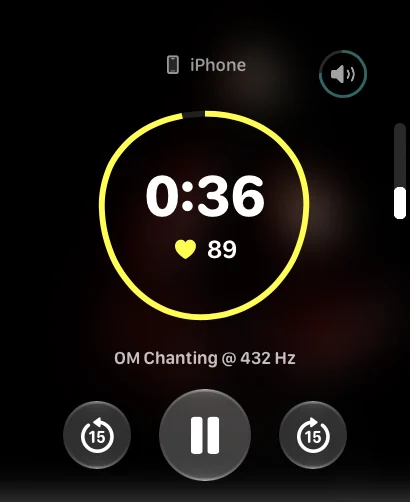

Leave your phone behind
Play audio transferred to your watch without keeping your iPhone nearby.
Put your phone away and keep your practice on your wrist. Transfer your audio to Apple Watch, listen offline and look back on your sessions on iPhone later.

Play audio transferred to your watch without keeping your iPhone nearby.
Transferred audio does not need an internet connection during playback.
Your session history syncs to iPhone so you can see time spent practising.
A meditation can start with a recording you already enjoy. Keep it in your Self library on iPhone and transfer it to Apple Watch before you want to practise.
Once the audio is on your watch, you can play it without your phone or internet. Before bed, leave your phone in another room and start your practice from your wrist.
Self keeps a history of your sessions. On iPhone, you can see how much time you spent practising and how your heart rate changed during sessions with Apple Watch.
Heart-rate tracking needs Apple Watch and Health permission. These readings are for reference and cannot diagnose a condition.
Use Self on iPhone to set a ritual with the days and time that suit you. A few minutes in the morning, a break during the day or a pause before bed can become a familiar part of your routine.
Self is free on iPhone, iPad and Apple Watch. There is no subscription, and you can use your own recordings rather than follow a fixed catalogue.
All Self features are free. No subscription. Available on iPhone, iPad and Apple Watch.
Download on the App Store